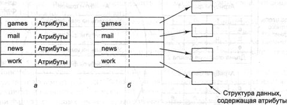
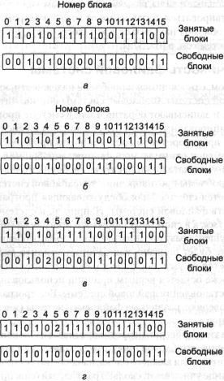

Реализация файловой системы
Теперь пора перейти от рассмотрения файловой системы с точки зрения пользователя
к рассмотрению с точки зрения разработчика системы. Пользователей интересует
то, как называются файлы, какие операции возможны с ними, как выглядит дерево
каталогов и тому подобные интерфейсные вопросы. Проектировщики файловых систем
интересуются тем, как хранятся файлы и каталоги, как осуществляется управление
дисковым пространством и как добиться надежной и эффективной работы файловой
системы. В следующих разделах мы познакомимся с этой точкой зрения на файловую
систему. .
Структура файловой системы
Файловые системы хранятся на дисках. Большинство дисков делятся на несколько
разделов с независимой файловой системой на каждом разделе. Сектор 0 диска называется
главной загрузочной записью (MBR, Master Boot Record) и используется для загрузки
компьютера. В конце главной загрузочной записи содержится таблица разделов.
В этой таблице хранятся начальные и конечные адреса (номера блоков) каждого
раздела. Один из разделов помечен в таблице как активный. При загрузке компьютера
BIOS считывает и исполняет MBR-запись, после чего загрузчик в MBR-записи определяет
активный раздел диска, считывает его первый блок, называемый загрузочным, и
исполняет его. Программа, находящаяся в загрузочном блоке, загружает операционную
систему, содержащуюся в этом разделе.
Для единообразия каждый дисковый раздел начинается с загрузочного блока,
даже если в нем не содержится загружаемой операционной системы. К тому же в
этом разделе может быть в дальнейшем установлена операционная система, поэтому
зарезервированный загрузочный блок оказывается полезным.
Во всем остальном строение раздела диска меняется от системы к системе. Часто
файловые системы содержат некоторые из элементов, показанных на рис. 6.8. Один
из таких элементов, называемый суперблоком, содержит ключевые параметры файловой
системы и считывается в память при загрузке компьютера или при первом обращении
к файловой системе. Типичная информация, хранящаяся в суперблоке, включает «магическое»
число, позволяющее различать системные файлы, количество блоков в файловой системе,
а также другую ключевую административную информацию.
Рис. 6.8. Возможная структура файловой системы
Следом располагается информация о свободных блоках файловой системы, например
в виде битового массива или списка указателей. За этими данными может следовать
информация об i-узлах, представляющих собой массив структур данных, по одной
структуре на файл, содержащих всю информацию о файлах. Следом может размещаться
корневой каталог, содержащий вершину дерева файловой системы. Наконец, остальное
место дискового раздела занимают все остальные каталоги и файлы.
Реализация файлов
Вероятно, наиболее важным моментом в реализации хранения файлов является учет
соответствия блоков диска файлам. Для определения того, какой блок какому файлу
принадлежит, в различных операционных системах применяются различные методы.
Некоторые из них будут рассмотрены в данном разделе.
Непрерывные файлы
Простейшей схемой выделения файлам определенных блоков на диске является система,
в которой файлы представляют собой непрерывные наборы соседних блоков диска.
Тогда на диске, состоящем из блоков по 1 Кбайт, файл размером в 50 Кбайт будет
занимать 50 последовательных блоков. При 2-килобайтных блоках такой файл займет
25 соседних блоков.
Пример непрерывных файлов показан на рис. 6.9, а. Здесь показаны первые
40 блоков диска, начиная с блока 0, слева. Вначале диск был пуст. Затем на диск,
начиная с блока 0, был записан файл А длиной в четыре блока. После него был
записан шестиблочный файл В, впритык к файлу А. Обратите внимание, что каждый
файл начинается с нового блока, так что если длина файла A была равна 3 1/2
блока, некоторое место в конце последнего блока файла пропадает. На рисунке
всего показано семь файлов. Каждый следующий файл начинается с блока, следующего
за последним блоком предыдущего файла. Затенение используется только для того,
чтобы было легче различать отдельные файлы.
Рис. 6.9. Семь непрерывных файлов на диске (а);
состояние диска после удаления двух файлов (б)
У непрерывных файлов есть два существенных преимущества. Во-первых, такую
систему легко реализовать, так как системе, чтобы определить, какие блоки принадлежат
тому или иному файлу, нужно следить всего лишь за двумя числами: номером первого
блока файла и числом блоков в файле. Зная первый блок файла, любой другой его
блок легко получить при помощи простой операции сложения.
Во-вторых, при работе с непрерывными файлами производительность просто превосходна,
так как весь файл может быть прочитан с диска за одну операцию. Требуется только
одна операция поиска (для первого блока). После этого более не нужно искать
цилиндры и тратить время на ожидания вращения диска, поэтому данные могут считываться
с максимальной скоростью, на которую способен диск. Таким образом, непрерывные
файлы легко реализуются и обладают высокой производительностью.
К сожалению, у такого способа распределения дискового пространства имеется
серьезный недостаток: со временем диск становится фрагментированным. Чтобы понять,
как это происходит, рассмотрим рис. 6.9, б. Два файла, D и F,
были удалены. Когда файл удаляется, его блоки освобождаются, оставляя промежутки
свободных блоков на диске. По мере удаления файлов диск становится все более
«дырявым».
Вначале эта фрагментация не представляет проблемы, так как каждый новый файл
может быть записан в конец диска, вслед за предыдущим файлом. Однако в конце
концов диск заполнится и либо потребуется специальная операция по уплотнению
используемого пространства диска, либо надо будет изыскать способ использовать
свободное пространство на месте удаленных файлов. Для повторного использования
освободившегося пространства потребуется содержать список пустых участков, что
в принципе выполнимо. Однако при создании нового файла будет необходимо знать
его окончательный размер, чтобы выбрать для него участок подходящего размера.
Представьте себе последствия такой структуры. Пользователь запускает текстовый
редактор или текстовой процессор, чтобы создать документ. Первое, что интересует
программу, это сколько байтов будет в документе. На этот вопрос следует дать
ответ, в противном случае программа не сможет работать. Если пользователь укажет
слишком маленькое число, программа может закончиться аварийно, так как свободный
участок диска окажется заполнен и будет негде разместить остальную часть файла.
Если пользователь попытается обойти эту проблему, задав заведомо большой окончательный
размер, например 100 Мбайт, может случиться, что редактор не сможет найти такой
большой свободный участок и сообщит, что не может создать файл. Конечно, пользователь
может поторговаться и снизить свои требования до 50 Мбайт и т. д. до тех пор,
пока не найдется подходящий свободный участок. Тем не менее такая схема вряд
ли доставит удовольствие пользователям.
И все-таки есть ситуации, в которых непрерывные файлы могут применяться и
в самом деле широко используются: на компакт-дисках. Здесь все размеры файлов
известны заранее и не могут меняться при последующем использовании файловой
системы CD-ROM. Наиболее распространенную файловую систему CD-ROM мы рассмотрим
ниже в этой главе.
Как уже говорилось в главе 1, в кибернетике история часто повторяется с появлением
новых технологий. Файловые системы, состоящие из непрерывных файлов, применялись
на магнитных дисках много лет назад благодаря их простоте и высокой производительности
(удобство для пользователей почти не принималось тогда в расчет). Затем эта
идея была позабыта из-за необходимости задавать окончательный размер файла при
его создании. Но с появлением CD-ROM и DVD, а также других одноразовых оптических
носителей о преимуществах непрерывных файлов вспомнили снова. Изучение старых
систем и идей оказывается полезным, так как многие простые и ясные концепции
тех систем находят применение в новых системах самым удивительным образом.
Связные списки
Второй метод размещения файлов состоит в представлении каждого файла в виде
связного списка из блоков диска, как показано на рис. 6.10. Первое слово каждого
блока используется как указатель на следующий блок. В остальной части блока
хранятся данные.
Рис. 6.10. Размещение файла в виде связного списка
блоков диска
В отличие от систем с непрерывными файлами, такой метод позволяет использовать
каждый блок диска. Нет потерь дискового пространства на фрагментацию (кроме
потерь в последних блоках файла). Кроме того, в каталоге нужно хранить только
адрес первого блока файла. Всю остальную информацию можно найти там.
С другой стороны, хотя последовательный доступ к такому файлу несложен, произвольный
доступ будет довольно медленным. Чтобы получить доступ к блоку п, операционная
система должна сначала прочитать первые n - 1 блоков по очереди. Очевидно,
такая схема оказывается очень медленной.
Кроме того, размер блока уменьшается на несколько байтов, требуемых для хранения
указателя. Хотя это и не смертельно, но размер блока, не являющийся степенью
двух, будет менее эффективным, так как многие программы читают и пишут блоками
по 512, 1024, 2048 и т. д. байтов. Если первые несколько байтов каждого блока
будут заняты указателем на следующий блок, то для чтения блока полного размера
придется считывать и объединять два соседних блока диска, для чего потребуется
выполнение дополнительных операций.
Связный список при помощи таблицы в памяти
Оба недостатка предыдущей схемы организации файлов в виде связных списков могут
быть устранены, если указатели на следующие блоки хранить не прямо в блоках,
а в отдельной таблице, загружаемой в память. На рис. 6.11 показан внешний вид
такой таблицы для файлов с рис. 6.10. На обоих рисунках показаны два файла.
Файл А использует блоки диска 4, 7, 2, 10 и 12, а файл В использует блоки
диска 6, 3, 11 и 14. С помощью таблицы, показанной на рис. 6.11, мы можем
начать с блока 4 и следовать по цепочке до конца файла. То же может быть
сделано для второго файла, если начать с блока 6. Обе цепочки завершаются
специальным маркером (например -1), не являющимся допустимым номером блока.
Такая таблица, загружаемая в оперативную память, называется FAT-таблицей
(File Allocation Table — таблица размещения файлов).
Рис. 6.11. Таблица размещения файлов
Эта схема позволяет использовать для данных весь блок. Кроме того, случайный
доступ при этом становится намного проще. Хотя для получения доступа к какому-либо
блоку файла все равно понадобится проследовать по цепочке по всем ссылкам вплоть
до ссылки на требуемый блок, однако в данном случае вся цепочка ссылок уже хранится
в памяти, поэтому для следования по ней не требуются дополнительные дисковые
операции. Как и в предыдущем случае, в каталоге достаточно хранить одно целое
число (номер начального блока файла) для обеспечения доступа ко всему файлу.
Основной недостаток этого метода состоит в том, что вся таблица должна постоянно
находиться в памяти. Для 20-гигабайтного диска с блоками размером 1 Кбайт потребовалась
бы таблица из 20 млн записей, по одной для каждого из 20 млн блоков диска. Каждая
запись должна состоять как минимум из трех байтов.
Для ускорения поиска размер записей должен быть увеличен до 4 байт. Таким образом,
таблица будет постоянно занимать 60 или 80 Мбайт оперативной памяти. Таблица,
конечно, может быть размещена в виртуальной памяти, но и в этом случае ее размер
оказывается чрезмерно большим, к тому же постоянная выгрузка таблицы на диск
и загрузка с диска существенно снизит производительность файловых операций.
I-узлы
Последний метод отслеживания принадлежности блоков диска файлам состоит в связывании
с каждым файлом структуры данных, называемой i-узлом (index node — индекс-узел),
содержащей атрибуты файла и адреса блоков файла. Простой пример i-узла показан
на рис. 6.12. При наличии i-узла можно найти все блоки файла. Большое преимущество
такой схемы перед хранящейся в памяти таблицей из связных списков заключается
в том, что каждый конкретный i-узел должен находиться в памяти только тогда,
когда соответствующий ему файл открыт. Если каждый i-узел занимает п
байт, а одновременно открыто может быть k файлов, то для массива i-узлов
потребуется в памяти всего kn байтов.

Рис. 6.12. Пример i-узла
Обычно этот размер значительно меньше, чем FAT-таблица, описанная в предыдущем
разделе. Это легко объясняется. Размер таблицы, хранящей связный список всех
блоков диска, пропорционален размеру самого диска. Для диска из п блоков
потребуется п записей в таблице. Таким образом, размер таблицы линейно
растет с ростом размера диска. Для схемы i-узлов, напротив, требуется массив
в памяти с размером, пропорциональным максимальному количеству файлов, которые
могут быть открыты одновременно. При этом не важно, будет ли размер диска 1
Гбайт, 10 Гбайт или 100 Гбайт.
С такой схемой связана проблема, заключающаяся в том, что при выделении каждому
файлу фиксированного количества дисковых адресов этого количества может не хватить.
Одно из решений заключается в резервировании последнего дискового адреса не
для блока данных, а для следующего адресного блока, как показано на рис. 6.12.
Более того, можно создавать целые цепочки и даже деревья адресных блоков. Мы
снова вернемся к теме i-узлов, когда приступим к изучению системы UNIX позднее.
Реализация каталогов
Прежде чем прочитать файл, его следует открыть. При открытии файла операционная
система использует поставляемое пользователем имя пути, чтобы найти запись в
каталоге. Запись в каталоге содержит информацию, необходимую для нахождения
блоков диска. В зависимости от системы это может быть дисковый адрес всего файла
(для непрерывных файлов), номер первого блока файла (обе схемы связных списков)
или номер i-узла. Во всех случаях основная функция каталоговой системы состоит
в преобразовании ASCII-имени в информацию, необходимую для нахождения данных.
С этой проблемой тесно связан вопрос размещения атрибутов файла. Каждая файловая
система поддерживает различные атрибуты файла, такие как дату создания файла,
имя владельца файла и т. д., и всю эту информацию нужно где-то хранить. Один
из возможных вариантов состоит в хранении этих сведений прямо в каталоговой
записи. Многие файловые системы именно так и поступают. Этот вариант показан
на рис. 6.13, а. В этой простой схеме каталог состоит из списка элементов
фиксированной длины по одному на файл, содержащих имена файлов, структуру атрибутов
файла, а также один или несколько дисковых адресов, указывающих расположение
файла на диске.

Рис. 6.13. Простой каталог, содержащий записи фиксированной
длины с атрибутами и дисковыми адресами (а);
каталог, в котором каждая запись является просто ссылкой на i-узел (б)
Системы, использующие i-узлы, могут хранить атрибуты в i-узлах, а не в записях
каталога. В этом случае запись в каталоге может быть короче: просто имя файла
и номер i-узла. Этот подход показан на рис. 6.13, б. Как мы увидим позднее,
у этого метода есть определенные преимущества по сравнению с помещением атрибутов
прямо в каталоговые записи. Два подхода, показанные на рис. 6.13, соответствуют
системам MS-DOS и UNIX, о чем еще будет рассказано в этой главе.
До сих пор мы предполагали, что файлы имеют короткие имена фиксированной
длины. В системе MS-DOS файл может иметь имя длиной от 1 до 8 символов, а также
расширение длиной до 3 символов. В системе UNIX Version 7 имена файлов могут
быть от одного до 14 символов, включая расширение. Однако почти всеми современными
операционными системами поддерживаются более длинные имена файлов переменной
длины. Как это может быть реализовано?
Простейший метод состоит в установке ограничения на длину имени файла, обычно
255 символов, и использовании одной из схем, показанных на рис. 6.13. Такой
способ прост, но он расходует много места в каталоге, так как длинные имена
обычно бывают далеко не у всех файлов. Следовательно, для более эффективного
использования дискового пространства желательно использовать другую структуру.
Один из альтернативных подходов состоит в отказе от предположения о том,
что все записи в каталоге должны иметь один и тот же размер. При таком подходе
каждая запись в каталоге начинается с порции фиксированного размера, обычно
начинающейся с длины записи, за которой следуют данные в фиксированном формате
— идентификатор владельца, дата создания, информация о защите и прочие атрибуты.
Следом за заголовком фиксированной длины идет часть записи переменной длины,
содержащая имя файла (рис. 6.14, а). На рисунке показаны три описателя файла,
project-budget, personnel и foo. Имя каждого файла завершается специальным
символом (обычно 0), обозначенным на рисунке перечеркнутыми квадратиками. Чтобы
каждая запись в каталоге могла начинаться с границы слова, имя каждого файла
дополняется до целого числа слов байтами, показанными на рисунке затененными
прямоугольниками.
Рис. 6.14. Два варианта реализации длинных имен:
прямо в записи каталога (а); в «куче» (б)
Недостаток этого метода состоит в том, что при удалении файла в каталоге
остается промежуток переменной длины, в который описатель следующего файла может
не поместиться. Эта проблема аналогична проблеме хранения на диске непрерывных
файлов, хотя уплотнить каталог значительно легче, чем весь диск. Другая проблема
связана с тем, что каталоговые записи переменной длины могут занимать сразу
две страницы памяти. При чтении такой каталоговой записи может возникнуть прерывание
из-за отсутствия в оперативной памяти следующей страницы.
Другой метод реализации длинных имен файлов заключается в том, чтобы сделать
все записи каталога фиксированной (равной) длины и хранить в них только указатели
на имена, а сами имена хранить отдельно в «куче», в конце каталога,
как показано на рис. 6.14, б. Преимущество этого метода состоит в том,
что при удалении файла освободившееся место в каталоге точно подойдет для нового
описателя файла. Тем не менее «кучу» придется все так же «разгребать»,
и при чтении длинного имени из нее также может возникнуть прерывание из-за отсутствия
страницы памяти. Однако имена файлов уже не должны начинаться с границы слов,
поэтому символы-заполнители не потребуются.
Во всех рассмотренных нами пока схемах при поиске файла каталоги просматриваются
линейно сверху вниз. Для очень больших каталогов, содержащих много тысяч файлов,
такой поиск может занять довольно много времени. Один из способов ускорить поиск
файла состоит в использовании хэш-таблицы в каждом каталоге. Пусть размер такой
таблицы будет равен п. При добавлении в каталог нового файла его имя
должно хэшироваться в число от 0 до n-1. В качестве хэш-функции может использоваться,
например, взятие остатка от деления имени файла на п. В качестве альтернативы
можно делить не само имя, а сумму слов, его образующих. Возможны и другие варианты.
В любом случае исследуется элемент таблицы, соответствующий полученному хэш-коду.
Если элемент не используется, туда помещается указатель на описатель файла.
(Описатели файлов размещаются вслед за хэш-таблицей.) Если же элемент таблицы
уже занят, то создается связный список, объединяющий все описатели файлов с
одинаковым хэш-кодом.
Поиск файла осуществляется аналогично. Имя файла хэшируется. По хэш-коду
определяется элемент таблицы. Затем проверяются все описатели файла из связного
списка и сравниваются с искомым именем файла обычным способом. Если имени файла
в связном списке нет, это означает, что файла нет в каталоге.
Преимуществом использования хэш-таблицы является ускоренный в несколько раз
поиск файла. Недостаток этого метода состоит в более сложном администрировании
каталога. Применять этот метод стоит только в тех системах, в которых ожидается,
что каталоги будут содержать сотни и тысячи файлов.
Принципиально отличный способ ускорения процесса поиска файлов в больших
каталогах заключается в кэшировании результатов поиска. Прежде чем начать поиск
файла, проверяется, нет ли его имени в кэше. Если файловая система недавно уже
искала этот файл, его имя окажется в кэше и повторная операция поиска будет
выполнена очень быстро. Конечно, кэширование поможет только в том случае, если
файловая система много раз обращается к небольшому количеству файлов.
Совместно используемые файлы
Когда несколько пользователей одновременно работают над одним проектом, им часто
бывает нужно совместно использовать одни и те же файлы. Поэтому часто оказывается
удобным, чтобы совместно используемый файл одновременно присутствовал в различных
каталогах, принадлежащих различным пользователям. На рис. 6.15 снова показана
файловая система с рис. 6.6, только теперь один из файлов пользователя С
присутствует также в каталоге пользователя В. Соединение между каталогом
пользователя В и совместно используемым файлом называется связью.
Сама файловая система теперь представляет собой ориентированный ациклический
граф (DAG, Directed Acyclic Graph), а не дерево.
Совместно
используемый файл
Рис. 6.15. Файловая система, содержащая совместно
используемый файл
Совместное использование файлов удобно, но в то же время создает некоторые
новые проблемы. Если дисковые адреса содержатся в самих каталоговых записях,
тогда при добавлении новых данных к совместно используемому файлу новые блоки
будут числиться только в каталоге того пользователя, который производил эти
изменения с файлом. Другим пользователям эти изменения будут не видны.
Эта проблема имеет два решения. Во-первых, информация о блоках диска, занимаемых
файлом, может содержаться не в каталоге, а в специальной структуре данных, связанной
с файлом. В этом случае записи в каталогах будут просто указывать на эту структуру
данных. Этот метод используется в системе UNIX (структура данных называется
там i-узлом).
Второе решение состоит в том, что когда пользователь В устанавливает
связь с одним из файлов пользователя С, система создает в каталоге пользователя
В новый файл типа LINK (связь). Новый файл содержит просто имя пути к
файлу, с которым он связан. Когда пользователь В читает данные из связанного
файла, операционная система видит, что обращение производится к файлу типа LINK,
поэтому она открывает файл, с которым связан этот файл, и читает данные из него.
Такой метод называется символьным связыванием.
У каждого из этих методов имеются недостатки. В первом методе, когда пользователь
В устанавливает связь с совместно используемым файлом, в i-узле владельцем
файла числится пользователь С. Создание связи не изменяет владельца файла
(рис. 6.16), а только увеличивает счетчик i-узла, что позволяет системе отслеживать
количество записей в каталогах, ссылающихся на этот файл.
Рис. 6.16. Ситуация до связывания (а); после
создания связи (б); владелец удалил свой файл (в)
Если впоследствии пользователь С попытается удалить этот файл, операционная
система столкнется с проблемой. Если она удалит файл и очистит i-узел, у пользователя
В окажется запись в каталоге, указывающая на неверный i-узел. Если этот
i-узел впоследствии будет назначен другому файлу, связь в каталоге пользователя
В будет ссылаться на неверный файл. По значению счетчика i-узла система
сможет определить, что этот файл используется кем-то еще, но у нее нет способа
найти все записи в каталогах, указывающие на этот файл, чтобы удалить их. Указатели
на каталоги не могут храниться в i-узлах, так как число таких каталогов ничем
не ограничивается.
Единственное, что может сделать операционная система — это удалить запись
в каталоге пользователя С, но оставить на месте i-узел, уменьшив значение
счетчика на 1, как показано на рис. 6.16, в. Таким образом, мы теперь
получили ситуацию, в которой пользователь В является единственным пользователем,
имеющим ссылку на файл, владельцем которого считается пользователь С.
Если система ведет учет или выделяет ограниченные квоты на использование дискового
пространства, пользователь С будет продолжать получать счета за этот
файл до тех пор, пока пользователь В не решит, наконец, удалить его.
В этом случае счетчик i-узла уменьшится до нуля и система удалит файл.
При символьном связывании такой проблемы не возникает, так как указатель
на i-узел есть только у владельца файла. У остальных пользователей, установивших
связь с этим файлом, есть только пути к файлу, а не указатели на i-узел. Когда
владелец удаляет файл, файл уничтожается. Последующие попытки использовать
этот файл при помощи символьной связи не будут иметь успеха, так как система
не сможет найти файл. Удаление символьной связи никоим образом не повлияет на
файл.
Недостатком символьной связи является необходимость накладных расходов. Чтобы
получить доступ к i-узлу, следует сначала прочитать файл, содержащий путь. Затем
следует пройти по этому пути, открывая каталог за каталогом, пока, наконец,
не будет получен нужный i-узел. Все эти действия могут потребовать существенного
количества обращений к диску. Кроме того, для каждой символьной связи требуется
дополнительный i-узел, а также дополнительный блок диска для хранения пути к
файлу, хотя, если имя пути короткое, то в качестве оптимизации система может
хранить его в самом i-узле. Преимущество символьных связей состоит в том, что
они могут использоваться для ссылок на файлы, расположенные на удаленных компьютерах
в любой точке земного шара. Для этого, кроме обычного пути файла, нужно всего
лишь указать сетевой адрес машины, на которой файл располагается.
Использование связей, как символьных, так и других, создает еще одну проблему.
При использовании связей у одного файла оказывается несколько путей. Программы,
сканирующие каталоги со всеми подкаталогами, могут наткнуться на один и тот
же файл несколько раз. Если такая программа, например, записывает все файлы
на магнитофонную ленту, она запишет на ленту несколько копий одного и того же
файла. Более того, если запись с этой ленты будет потом прочитана на другом
компьютере, этот файл окажется скопированным на диск несколько раз, если только
считывающая ленту программа не догадается, что это один и тот же файл.
Организация дискового пространства
Обычно файлы хранятся на диске, поэтому организация дискового пространства является
основной заботой разработчиков файловой системы. Для хранения файла из п
байтов возможно использование двух стратегий: выделение на диске п последовательных
байтов или разбиение файла на несколько непрерывных блоков. Та же дилемма присутствует
в системах управления памяти, где имеется выбор между чистой сегментацией и
страничной организацией памяти.
Как уже было показано, при хранении файла в виде непрерывной последовательности
байтов возникает проблема, связанная с увеличением его размеров. Единственный
способ увеличить непрерывный файл состоит в перемещении его на новое место на
диске. Проблема существенна и для управления сегментами памяти, с той разницей,
что перемещение сегмента в памяти является более быстрой операцией по сравнению
с перемещением файла на диске. По этой причине почти все файловые системы хранят
файлы в виде блоков фиксированного размера, расположенных в различных частях
диска.
Размер блока
Как только принято решение хранить файлы блоками фиксированного размера, возникает
вопрос о размере этих блоков. Учитывая организацию дисков, очевидными кандидатами
на роль сегментов файлов являются сектор, дорожка и цилиндр диска (минусом такого
выбора является зависимость этих параметров от устройств). В системе управления
страницами памяти размер страницы также входит в число основных претендентов.
Если выбрать большую единицу хранения, такую как цилиндр, это будет означать,
что любой файл, даже состоящий из одного байта, займет как минимум целый цилиндр.
Изучения показали, что средний размер файла в системе UNIX около 1 Кбайт, так
что при выделении каждому файлу 32-килобайтного блока будет расходоваться понапрасну
31/32 или 97 % общего дискового пространства [241].
С другой стороны, при использовании маленьких единиц хранения каждый файл
будет состоять из большого числа блоков. Для чтения каждого блока файла обычно
требуется операция поиска нужного цилиндра и задержка вращения диска, поэтому
чтение файла, состоящего из большого числа блоков, будет медленным. Например,
представьте себе диск с 131 072 байтами (128 Кбайт) на дорожку, периодом вращения
8,33 мс и средним временем поиска 10 мс. При этом время, требующееся для чтения
блока из k байтов, будет равно сумме времени поиска, задержки вращения
и времени переноса данных:
10 + 4.165 + (k/131072) * 8.33
Жирная ломаная линия на рис. 6.17 показывает зависимость скорости передачи
данных от размера блока. Чтобы вычислить эффективность использования дискового
пространства, нам нужно сделать предположение о среднем размере файла. Недавние
измерения, проведенные автором на факультете, где около 1000 пользователей компьютеров
и более миллиона дисковых файлов системы UNIX, показали, что медиановый размер
файла равен 1680 байт. Это означает, что половина файлов меньше 1680 байт, а
другая половина больше этого размера. Следует заметить, что медиановый размер
представляет собой лучшую единицу измерения, чем средний, так как небольшое
количество файлов может очень сильно повлиять на среднее значение, но не на
медиану. (Среднее значение оказалось равным 10 845 байт благодаря нескольким
100-мегабайтным руководствам по аппаратуре, которые оказались в момент измерений
на дисках). Для простоты предположим, что все файлы имеют размер, равный 2 Кбайт,
в результате чего мы получим штриховую линию, изображающую на рис. 6.17 эффективность
использования дискового пространства.
Рис. 6.17. Зависимость скорости чтения/записи данных
диска (жирная линия, левая шкала)
и эффективности использования дискового пространства (штриховая линия, правая
шкала)
от размера блоков. Все файлы по 2 Кбайт
Эти две кривые можно понимать следующим образом. Время доступа к блоку практически
полностью определяется временем поиска и задержкой вращения, поэтому, если считать,
что для доступа к блоку требуется 14 мс, чем больше данных удастся считать за
одну такую операцию, тем лучше. Таким образом, скорость чтения/записи данных
растет пропорционально размеру блока до тех пор, пока блок не вырастет настолько,
что важнее окажется время передачи блока. При использовании небольших блоков,
размер которых составляет степень числа два, и 2-килобайтных файлов потерь дискового
пространства нет. Однако при хранении 2-килобайтных файлов в 4-килобайтных блоках
теряется уже 50 % дискового пространства. В действительности мало файлов имеют
длину, кратную размеру блока, поэтому какая-то часть дискового пространства
всегда теряется в последнем блоке файла.
Что показывает данный график? То, что производительность и использование
дискового пространства являются взаимоисключающими целями. При небольших блоках
низкая производительность, зато хорошее использование дискового пространства,
и наоборот. Требуется найти некий компромиссный размер. Для подобных данных
4 Кбайт может оказаться оптимальным выбором, однако некоторые операционные системы
сделали свой выбор много лет назад, когда и параметры дисков, и размеры файлов
были другими. В системе UNIX обычно используется размер блока 1 Кбайт. В системе
MS-DOS размер блока может быть любой степенью двух от 512 байт до 32 Кбайт и
определяется размером диска (так как максимальное количество блоков в разделе
диска равно 216 и размер блока оказывается пропорциональным размеру
диска).
Пытаясь определить, является ли использование файлов в Windows NT существенно
отличным от их употребления в UNIX, Фогельс в университете Корнелла произвел
соответствующие измерения [346]. Он пришел к выводу, что использование файлов
в NT более сложное, чем в UNIX. Он писал:
Когда мы вводим несколько символов в текстовом редакторе notepad, сохраняя
их в файле, мы запускаем 26 системных вызовов, включая 3 неудачные попытки открытия
файлов, перезапись одного файла и 4 дополнительных последовательности операций
открытия и закрытия файлов.
Тем не менее его измерения показали медиановый размер (взвешенный по использованию)
только читаемых файлов, равный 1 Кбайт, только записываемых файлов — 2,3 Кбайт,
и файлов, читаемых и записываемых, равный 4,2 Кбайт. Учитывая, что университет
Корнелла производил значительно больше масштабных научных вычислений, чем учреждение
автора, а также различие в технике измерений (статической и динамической), полученные
результаты в достаточной мере согласуются с медиановым размером файлов около
2 Кбайт.
Учет свободных блоков
После того как мы выбрали размер блоков, следует определить, как учитывать свободные
и занятые блоки. Широкое применение получили два метода, показанные на рис.
6.18. Первый метод представляет собой использование связного списка блоков диска.
При этом в каждом блоке списка содержится столько номеров свободных блоков,
сколько может поместиться в один блок. При размере блока, равном 1 Кбайт, и
32-разрядных номерах блоков каждый блок списка свободных блоков может содержать
номера 255 свободных блоков. (Одно 32-разрядное слово нужно для указателя на
следующий блок списка). Для 16-гигабайтного диска потребуется список свободных
блоков, состоящий из 16 794 блоков, чтобы содержать все 224 номера
дисковых блоков. Часто для списка резервируется нужное число блоков в начале
диска.
Рис. 6.18. Хранение информации о свободных блоках
в виде списка (а); битовый массив (б)
Другой метод учета свободного дискового пространства состоит в хранении этой
информации в виде битового массива (иногда называемого бит-картой). При этом
на каждый блок приходится всего по одному биту вместо 32. Свободные блоки обозначаются
в массиве единицами, а занятые — нулями (или наоборот). 16-гигабайтный диск
состоит из 224 килобайтных блоков, таким образом, для него требуется
массив размером 224 бит, то есть 2048 блоков.
При использовании метода учета свободных блоков при помощи списка в оперативной
памяти требуется хранить только один блок указателей. Когда создается файл,
нужные блоки берутся из блока указателей. Когда указатели в этом блоке заканчиваются,
читается новый блок с диска. Соответственно, при удалении файла его блоки освобождаются,
а их номера добавляются в список, хранящийся в оперативной памяти. Когда блок
указателей наполняется, он записывается на диск.
При определенных обстоятельствах такой метод приводит к излишним операциям
ввода-вывода. Рассмотрим ситуацию на рис. 6.19, а, в которой в блоке
указателей есть место только для еще двух записей (затененные прямоугольники
обозначают указатели в блоке). При удалении трехблочного файла блок указателей
переполняется и его нужно записать на диск, что приводит к ситуации, показанной
на рис. 6.19, б. Если теперь снова создается трехблочный файл, полный
блок указателей должен быть снова прочитан с диска, что нас возвращает к ситуации
на рис. 6.19, а. Если этот трехблочный файл был временным файлом, то
он вскоре опять удаляется, при этом опять блок указателей пишется на диск. Таким
образом, когда указатели в блоке оказываются на границе блока, возникает необходимость
в дополнительных операциях ввода-вывода.
Рис. 6.19. Почти полный блок указателей свободных
блоков в памяти и три блока указателей на диске (а);
результат удаления трехблочного файла (б); альтернативная стратегия (в)
Существует метод, позволяющий избежать лишних операций ввода-вывода. Он состоит
в том, что полный блок указателей расщепляется на два. При этом из ситуации
на рис. 6.19, а вместо ситуации на рис. 6.19, б мы переходим к ситуации на рис.
6.19, в. При заполнении блока указателей в памяти этот блок записывается
на диск не в виде заполненного до конца блока, а как блок, заполненный наполовину,
то есть записывается, по сути, половина указателей блока. В памяти остается
блок с остальными указателями, то есть также заполненный наполовину блок. Таким
образом, хранящийся в оперативной памяти блок указателей максимально готов как
к добавлению в него новых указателей, так и к освобождению хранящихся в нем.
При использовании битового массива также возможно хранение в памяти всего
одного блока с обращением к диску за другим блоком, когда текущий блок переполняется
или, наоборот, становится пустым. Дополнительное преимущество такого подхода
состоит в том, что выделяемые файлу блоки будут располагаться близко друг к
другу, в результате чего для доступа к файлу будет затрачено меньше времени
на перемещение блока головок. Поскольку битовый массив представляет собой структуру
данных фиксированного размера, то при (частичной) постраничной организации ядра
битовый массив может быть помещен в виртуальную память, откуда можно получать
страницы по мере надобности.
Дисковые квоты
Чтобы не допустить захвата пользователями слишком больших участков дискового
пространства, многопользовательские операционные системы часто содержат механизм
предоставления дисковых квот. Суть в том, что администратор назначает каждому
пользователю максимальную долю файлов и блоков, а операционная система гарантирует,
что пользователи не превышают выделенных им квот. Типичный механизм реализации
этой идеи описан ниже.
Когда пользователь открывает файл, операционная система находит его атрибуты
и дисковые адреса и помещает их в таблицу в оперативной памяти. Среди атрибутов
находится элемент, сообщающий, кто является владельцем данного файла. Любые
увеличения размеров файла будут учитываться в записи квоты для этого пользователя.
Вторая таблица содержит запись квоты для каждого пользователя, файл которого
открыт в данный момент, даже если этот файл был открыт кем-либо другим.
Эта таблица показана на рис. 6.20. Она извлекается из файла квот, хранящегося
на диске. Когда все файлы закрыты, запись записывается обратно в файл.
Рис. 6.20. Квоты учитываются для каждого пользователя
в таблице квот
Когда в таблице открытых файлов создается новый элемент, в него помещается
указатель на запись квоты владельца файла. При каждом добавлении нового блока
к файлу общее количество блоков, числящееся за пользователем, увеличивается
и сравнивается с гибким и жестким лимитом. Гибкий лимит может быть превышен,
но жесткий нет. При достижении жесткого лимита любая попытка добавить блок к
файлу будет завершаться ошибкой. Аналогично проверяется количество файлов пользователя.
Когда пользователь пытается зарегистрироваться в системе, операционная система
считывает его файл квот, проверяя, не превысил ли пользователь гибкие пределы
по числу блоков или числу файлов. Если один из пределов превышен, операционная
система выдает предупреждение, а счетчик оставшихся предупреждений уменьшается
на единицу. Когда счетчик предупреждений достигает нуля, операционная система
отказывает пользователю в регистрации. Чтобы снова получить возможность входить
в систему, пользователю необходимо обратиться к системному администратору.
Таким образом, пользователь может превысить свои гибкие лимиты, при условии,
что перед выходом из системы он удалит лишние файлы, превышающие эти пределы.
Жесткие лимиты превышены быть не могут.
Надежность файловой системы
Разрушение файловой системы часто оказывается большим бедствием, чем поломка
компьютера. Если компьютер разрушается вследствие пожара, удара молнии или пользователь
прольет чашку кофе на клавиатуру, это неприятно, ремонт потребует денег, но
обычно не причинит много хлопот. Недорогие персональные компьютеры можно заменить
в течение часа, обратившись к соответствующему коммерсанту. (Исключение составляют
университеты, в которых для приобретения персональных компьютеров требуется
согласование этого вопроса в трех комитетах, получение пяти подписей и 90 дней
ожидания.)
В случае же потери файловой системы по вине аппаратуры, или программного
обеспечения, или крыс, прогрызших дополнительные отверстия в гибких дисках,
восстановление всей информации будет трудным, требующим много времени, а часто
и невозможным делом. Для пользователей, чьи программы, документы, файлы клиентов,
счета, базы данных, маркетинговые планы или другие данные утеряны навсегда,
последствия могут оказаться катастрофическими. Хотя операционная система не
может защитить от физического уничтожения оборудования или носителя, она может
помочь сберечь информацию. В данном разделе мы рассмотрим некоторые вопросы,
касающиеся защиты файловой системы от уничтожения.
Когда гибкие диски покидают фабрику, их качество, как правило, превосходно,
но со временем на них могут появиться дефектные блоки. У жестких дисков дефектные
блоки часто бывают с самого начала, так как производство жестких дисков абсолютно
без дефектных блоков слишком дорого. Как уже рассказывалось в главе 5, дефектные
блоки обычно контроллер заменяет специальными запасными блоками. Тем не менее
эта техника не способна защитить абсолютно ото всех возможных вариантов потери
информации.
Резервные копии
Большинство пользователей считает создание резервных копий файлов просто потерей
времени. Однако когда в один прекрасный день их диск внезапно приказывает долго
жить, они диаметрально меняют свои привычки. Компании, напротив, обычно хорошо
осознают ценность своей информации и создают резервные копии файлов один раз
в сутки, чаще всего на магнитной ленте. Современные магнитные ленты вмещают
десятки и иногда даже сотни гигабайт при цене в несколько центов за гигабайт.
Тем не менее создание резервных копий является далеко не столь тривиальным делом,
как это может показаться, поэтому мы ниже рассмотрим некоторые аспекты данной
темы.
Резервные копии на магнитной ленте обычно создаются для возможного восстановления
информации при потенциальном ее уничтожении вследствие аварии или ошибки пользователя.
К авариям можно отнести такие события, как выход из строя жесткого диска, пожары,
потопы и другие природные катаклизмы. На практике такое случается нечасто, поэтому
пользователи редко беспокоятся о создании резервных копий. Как правило, эти
пользователи по той же причине не страхуют свое имущество от пожаров и прочих
стихийных бедствий.
Вторая причина состоит в том, что пользователи часто случайно удаляют файлы,
которые позднее оказываются нужными. Эта проблема возникает столь часто, что
в системе Windows при обычном удалении файла он на самом деле не удаляется,
а помещается в специальный каталог, называемый мусорной корзиной, откуда
его при необходимости несложно выудить обратно. Резервные копии продолжают этот
принцип дальше, позволяя восстанавливать с архивных лент файлы, удаленные много
дней и даже недель назад.
Создание резервных копий занимает много времени и требует много места, поэтому
особенное значение при этом получают эффективность и удобство. Во-первых, следует
ли архивировать всю файловую систему или только ее часть? Многие операционные
системы хранят двоичные файлы в отдельных каталогах. Эти файлы не обязательно
архивировать, так как они могут быть переустановлены с CD-ROM производителя.
Кроме того, большинство систем имеет каталог для временных файлов. В их архивировании
также нет необходимости. В системе UNIX все специальные файлы (устройств ввода-вывода)
хранятся в каталоге /dev. Создавать резервную копию этого каталога не
только ненужно, но и опасно, так как программа архивации может навсегда повиснуть,
если попытается читать эти файлы. Поэтому обычно создаются резервные копии отдельных
каталогов, а не всей файловой системы.
Во-вторых, архивировать не изменившиеся с момента последней архивации файлы
неэффективно, поэтому на практике применяется идея инкрементных резервных копий,
или, как их еще называют, инкрементных дампов. Простейшая форма инкрементного
архивирования состоит в том, что полная резервная копия создается, скажем, раз
в неделю или раз в месяц, а ежедневно сохраняются только те файлы, которые изменились
с момента последней полной архивации. Еще лучше архивировать только те файлы,
которые изменились с момента последней архивации. Такая схема сокращает время
создания резервных копий, но усложняет процесс восстановления, так как для этого
нужно сначала восстановить файлы последней полной архивации, а затем проделать
ту же процедуру со всеми инкрементными резервными копиями. Чтобы упростить восстановление,
часто применяются более сложные схемы инкрементной архивации.
В-третьих, поскольку объем архивируемых данных обычно очень велик, желательно
сжимать эти данные до записи на магнитную ленту. Однако многие алгоритмы сжатия
данных устроены так, что малейший дефект ленты может привести к нечитаемости
всего файла или даже всей ленты. Поэтому следует хорошенько подумать, прежде
чем принимать решение о сжатии архивируемых данных.
В-четвертых, создание резервной копии сложно выполнять в активной файловой
системе. Если во время архивации создаются, удаляются и изменяются файлы и каталоги,
то информация в создаваемом архиве может оказаться противоречивой. В то же время,
поскольку создание резервной копии может занять несколько часов, для этого может
понадобиться отключение системы на большую часть ночи, что не всегда приемлемо.
По этой причине были разработаны алгоритмы, способные быстро фиксировать состояние
файловой системы для ее архивации, копируя критические структуры данных. Последующие
изменения файлов и каталогов требовали вместо их замены дополнительного копирования
отдельных блоков [160]. Таким образом, файловая система как бы замораживается
в момент фиксации и может архивироваться позднее.
Наконец, в-пятых, создание резервных копий создает множество нетехнических
проблем. Лучшая система безопасности, охраняющая информацию, может оказаться
бесполезной, если системный администратор хранит все свои магнитные ленты с
резервными копиями в неохраняемом помещении, которое еще и оставляет открытым.
Все, что нужно сделать шпиону, это заскочить на секунду в комнату,
положить кассету в карман и не спеша покинуть здание. Прощай, безопасность.
Кроме того, ежедневная архивация принесет мало пользы, если при пожаре погибнут
не только компьютеры, но и ленты с резервными копиями. По этой причине резервные
копии следует хранить в удаленном месте, в результате чего поддерживать безопасность
на достаточно высоком уровне становится еще сложнее. Детальное обсуждение этого
и других административных вопросов приводится в [244]. Ниже мы обсудим только
технические аспекты создания резервных копий файловой системы.
Для создания резервной копии диска на ленте существует две стратегии: физическая
архивация и логическая архивация. Физическая архивация состоит в поблочном
копировании на магнитную ленту всего диска с блока 0 по последний блок. Эта
программа настолько проста, что, возможно, она даже может быть полностью отлажена,
чего нельзя сказать об остальных полезных программах.
И все же о физической архивации следует сказать несколько слов. Во-первых,
в копировании неиспользуемых блоков диска мало пользы. Если программа архивации
сможет получить доступ к структуре данных, хранящей информацию о свободных и
занятых блоках диска, она может избежать копирования неиспользуемых блоков.
Однако тогда придется перед каждым блоком записывать его номер.
Вторая проблема возникает при столкновении программы архивации с дефектными
блоками диска. Если все дефектные блоки контроллер автоматически заменяет запасными
блоками, как было описано в разделе «Обработка ошибок» главы 5,
тогда физическая архивация работает прекрасно. Однако если дефектные блоки видны
операционной системе, которая учитывает их в одном или нескольких специальных
файлах или битовых массивах, то абсолютно необходимо, чтобы программа архивации
могла получить доступ к этой информации во избежание ошибок чтения диска.
Главное преимущество физической архивации состоит в ее простоте и высокой
скорости (обычно она может работать со скоростью диска). Основными ее недостатками
являются неспособность пропускать определенные каталоги, производить инкрементную
архивацию и восстанавливать отдельные файлы. По этим причинам в большинстве
систем применяется логическая архивация.
Логическая архивация сканирует один или несколько указанных каталогов
со всеми их подкаталогами и копирует на ленту все содержащиеся в них файлы и
каталоги, изменившиеся с указанной даты (например, с момента последней архивации).
Таким образом, при логической архивации на магнитную ленту записываются последовательности
детально идентифицированных каталогов и файлов, что позволяет восстановить отдельный
файл или каталог.
Поскольку логическая архивация применяется на практике чаще физической, познакомимся
более детально с алгоритмом архивации на примере, показанном на рис. 6.21. Этот
алгоритм используется в большинстве систем UNIX. На рисунке показано дерево
файлов с каталогами (квадраты) и файлами (кружки). Затененные элементы были
изменены с момента последней архивации и поэтому следует создать их резервную
копию. Светлые элементы не нуждаются в архивации. Каждый каталог и файл помечены
номером своего i-узла.
Рис. 6.21. Архивируемая файловая система
Этот алгоритм также создает резервные копии всех каталогов (даже не модифицированных),
расположенных на пути к модифицированному файлу или каталогу. Делается это по
двум причинам. Во-первых, чтобы все сохраненные файлы и каталоги можно было
восстановить на другом компьютере. Благодаря этому программа архивации может
использоваться для переноса всей файловой системы с одного компьютера на другой.
Во-вторых, сохранение резервных копий всех каталогов, расположенных на пути
к модифицированному файлу, позволяет восстановить один отдельный файл (например,
удаленный по ошибке). Представьте, что полная архивация системы произведена
в воскресенье, а в понедельник выполнена инкрементная архивация. Во вторник
удаляется каталог /usr/jhs/proj/пrЗ со всеми содержащимися в нем каталогами
и файлами. В среду утром пользователь хочет восстановить файл /usr/ jhs/proj/пrЗ/plans/summary.
Однако нельзя просто восстановить файл summary, так как каталоги /usr/jhs/proj/пrЗ/plans
и /usr/jhs/proj/пrЗ удалены и файл summary некуда поместить.
Сначала нужно восстановить каталоги пrЗ и plans. Чтобы операционная
система смогла корректно установить такие параметры этих каталогов, как идентификатор
владельца, режимы доступа, время создания, время изменения и т. д., эти каталоги
должны присутствовать на архивной ленте, несмотря на то, что сами каталоги не
модифицировались с момента последней архивации.
Алгоритм архивации создает битовый массив, индексированный по номеру i-узла,
в котором на каждый i-узел отводится несколько битов. Работа алгоритма протекает
в четыре этапа. Первый этап начинается в начальном каталоге (например, в корневом),
в котором исследуются все элементы. Для каждого модифицированного файла его
i-узел помечается в битовом массиве. Каждый каталог также помечается (независимо
от того, был он изменен или нет), после чего он открывается и рекурсивно исследуется
все его содержимое.
К концу фазы 1 все модифицированные файлы и все каталоги помечаются в битовом
массиве, как показано (затенением) на рис. 6.22, а. На втором этапе алгоритм
снова рекурсивно прошагивает весь каталог, снимая отметку со всех каталогов,
в которых нет модифицированных файлов или каталогов. В результате этих действий
битовый массив принимает вид, показанный на рис. 6.22, б. Обратите внимание,
что каталоги 10, 11, 14, 27, 29 и 30 теперь уже не помечены, так как в них и
в их подкаталогах не содержится ничего модифицированного. Для этих каталогов
не будет создаваться резервная копия. Напротив, каталоги 5 и 6 будут заархивированы,
несмотря на то, что сами они не были модифицированы. Однако они потребуются,
чтобы сегодняшние изменения можно было восстановить на новой машине. Для большей
эффективности фазы 1 и 2 можно объединить, выполнив их за один проход.
Рис. 6.22. Битовые массивы, используемые алгоритмом
логической архивации
К этому моменту алгоритму известно, какие каталоги и файлы должны архивироваться
(помеченные на рис. 6.22, б). Фаза 3 состоит из сканирования i-узлов
по порядку номеров и создания резервных копий всех каталогов, помеченных для
архивации. Они помечены на рис. 6.22, в. Перед каждым каталогом записываются
его атрибуты (владелец, времена и т. д.), необходимые для восстановления. Наконец,
на четвертом этапе файлы, помеченные на рис. 6.22, г, также архивируются со
своими атрибутами, записываемыми перед ними. На этом архивация завершается.
Восстановление файловой системы происходит достаточно просто. Сначала на
диске создается пустая файловая система. Затем восстанавливаются данные последней
полной архивации. Сначала восстанавливаются каталоги, создавая скелет файловой
системы, после чего восстанавливаются все файлы. Затем весь процесс повторяется
со всеми инкрементными архивациями по очереди.
Хотя алгоритм логической архивации несложен, в этом деле имеется несколько
хитростей. Во-первых, поскольку список свободных блоков не является файлом,
он не архивируется, следовательно, его приходится восстанавливать с нуля, после
того как были восстановлены все архивы. Это всегда
является выполнимой задачей, так как множество свободных блоков представляет
собой всего лишь совокупность всех блоков, содержащихся во всех файлах.
Второй проблемой являются связи файлов. Если у файла имеются связи в двух
или более каталогах, важно, чтобы этот файл был восстановлен только один раз,
и чтобы во всех каталогах, в которых были ссылки на этот файл, появились именно
ссылки.
Еще одна проблема состоит в том, что в системе UNIX файлы могут содержать
дыры. Считается допустимым открыть файл, записать в него несколько байтов, затем
переместить указатель в файле на много блоков в глубь файла, после чего записать
еще несколько байтов. Блоки посередине не являются частью файла и не должны
архивироваться и восстанавливаться. Файлы, содержащие образы памяти, часто содержат
большие пустые пространства между сегментом данных и стеком. Если их не обрабатывать
должным образом, то каждый восстановленный файл с образом памяти заполнит эту
область нулями и окажется того же размера, что и виртуальное адресное пространство
(например, 232 байт или, что еще хуже 264 байт).
Наконец, специальные файлы, называемые каналами или трубами и т. п., никогда
не должны архивироваться, независимо от того, в котором каталоге они могут оказаться
(они не обязаны находиться в каталоге /dev). Дополнительные сведения
о файловой системе см. в [67, 372].
Непротиворечивость файловой системы
Еще одним аспектом, относящимся к проблеме надежности, является непротиворечивость
файловой системы. Файловые системы обычно читают блоки данных, модифицируют
их и записывают обратно. Если в системе произойдет сбой прежде, чем все модифицированные
блоки будут записаны на диск, файловая система может оказаться в противоречивом
состоянии. Эта проблема становится особенно важной в случае, если одним из модифицированных
и не сохраненных блоков оказывается блок i-узла, каталога или списка свободных
блоков.
Для решения проблемы противоречивости файловой системы на большинстве компьютеров
имеется специальная обслуживающая программа, проверяющая непротиворечивость
файловой системы. Например, в системе UNIX такой программой является fsck,
а в системе Windows это программа scandisk. Эта программа может быть
запущена сразу после загрузки системы, особенно если до этого произошел сбой.
Ниже будет описано, как работает утилита fsck. Утилита scandisk
несколько отличается от fsck, поскольку работает в другой файловой системе,
однако для нее также остается верным принцип использования избыточной информации
для восстановления файловой системы. Все программы проверки файловой системы
проверяют различные файловые системы (дисковые разделы) независимо друг от друга.
Существует два типа проверки непротиворечивости: блоков и файлов. При проверке
непротиворечивости блоков программа создает две таблицы, каждая из которых содержит
счетчик для каждого блока, изначально установленный на 0. Счетчики в первой
таблице учитывают, сколько раз каждый блок присутствует в файле. Счетчики во
второй таблице записывают, сколько раз каждый блок учитывается в списке свободных
блоков (или в битовом массиве свободных блоков).
Затем программа считывает все i-узлы. Начиная с i-узла, можно построить список
всех номеров блоков, используемых в соответствующем файле. При считывании каждого
номера блока соответствующий ему счетчик увеличивается на единицу. Затем программа
анализирует список или битовый массив свободных блоков, чтобы обнаружить все
неиспользуемые блоки. Каждый раз, встречая номер блока в списке свободных блоков,
программа увеличивает на единицу соответствующий счетчик во второй таблице.
Если файловая система непротиворечива, то каждый блок будет встречаться только
один раз, либо в первой, либо во второй таблице, как показано на рис. 6.23,
а. Однако в результате сбоя эти таблицы могут принять вид, показанный
на рис. 6.23, б. В этом случае блок два отсутствует в каждой таблице.
О таком блоке программа сообщит как о недостающем блоке. Хотя пропавшие блоки
не причиняют вреда, они занимают место на диске, снижая его емкость. Решить
проблему пропавших блоков очень просто: программа проверки файловой системы
просто добавляет эти блоки к списку свободных блоков.

Рис. 6.23. Состояния файловой системы: непротиворечивое
(а); пропавший блок (б);
дубликат блока в списке свободных блоков (в); дубликат блока данных
(г)
Другая возможная ситуация показана на рис. 6.23, в. Здесь мы видим
блок номер 4, дважды появляющийся в свободном списке. (Дубликаты свободных блоков
возможны только в том случае, если файловая система действительно применяет
списки свободных блоков; при использовании битового массива такая ситуация невозможна.)
Решение этой проблемы также несложно: построить список свободных блоков заново.
Гораздо хуже ситуация, в которой один и тот же блок окажется сразу в двух
файлах, как показано на рис. 6.23, г в случае с блоком 5. При удалении
любого из этих файлов блок 5 будет помещен в список свободных блоков, что приведет
к ситуации, в которой один и тот же блок одновременно является и свободным и
занятым. Если удалить оба файла, этот блок будет помещен в список свободных
блоков дважды.
В такой ситуации программа проверки файловой системы должна взять свободный
блок, скопировать в него содержимое блока 5 и вставить эту копию в один из файлов.
Таким образом, содержимое файлов останется неизменным (хотя почти наверняка
один из файлов уже испорчен), но, по крайней мере, структура файловой системы
после этой операции становится непротиворечивой. Программа также должна выдать
сообщение об ошибке, чтобы пользователь мог изучить повреждение.
Помимо проверки правильности принадлежности блоков программа проверки файловой
системы также проверяет каталоговую структуру. Для этого также используется
таблица счетчиков, но уже не для блоков, а для файлов. Проверка начинается с
корневого каталога с рекурсивным заходом в каждый каталог. Для каждого файла
в каждом каталоге программа увеличивает на единицу счетчик использования файла.
Благодаря жестким связям файл может присутствовать сразу в нескольких каталогах.
Символьные связи не учитываются и не увеличивают счетчик.
Когда сканирование дерева каталогов завершено, программа получает список,
индексированный по номерам i-узлов, сообщающий, в скольких каталогах присутствует
каждый файл. Затем программа сравнивает полученные числа со счетчиками связей,
хранящимися в самих i-узлах. Эти счетчики содержат 1 при создании файла и увеличиваются
на единицу каждый раз, когда создается связь (жесткая) с данным файлом. В непротиворечивой
файловой системе оба счетчика должны совпадать. Однако возможны два типа ошибок:
значение счетчика связи в i-узле может оказать слишком велико или слишком мало.
Если счетчик связи больше, чем количество каталоговых записей, тогда даже
при удалении всех файлов из каталогов счетчик все равно не уменьшится до нуля
и i-узел не будет удален. Эта ошибка не серьезная, но она приводит к расходованию
дискового пространства файлом, не находящимся ни в одном каталоге. Чтобы исправить
ее, следует установить значение счетчика равным числу существующих каталоговых
записей.
Вторая ошибка таит в себе катастрофические последствия. Если у файла есть
две каталоговые записи, связанные с ним, но в i-узле утверждается, что описатель
у файла только один, тогда при удалении описателя этого файла в любом каталоге
счетчик i-узла уменьшится до нуля. При этом файловая система освободит все блоки,
занимаемые файлом, в том числе и блок, в котором помещается сам i-узел. Таким
образом, в одном из каталогов сохранится описатель файла, указывающий на неиспользуемый
i-узел, чьи блоки могут быть вскоре выделены другим файлам. Решение также заключается
в присваивании значения счетчика i-узла фактическому числу описателей файла.
Часто эти две операции, проверки блоков и проверки каталогов, для увеличения
эффективности объединяют в один проход. Возможно также проведение и других проверок.
Например, формат каталогов должен соответствовать определенным требованиям,
с i-узлами и ASCII-именами. Если i-узел оказывается больше числа i-узлов на
диске, это означает, что каталог поврежден.
Более того, у каждого i-узла могут оказаться значения режима доступа, являющиеся
допустимыми, но странными, как, например, 0007, совсем отказывающий в доступе
владельцу и его группе, но зато разрешающий всем посторонним пользователям читать,
писать и исполнять файл. Программа должна хотя бы сообщать обо всех файлах,
предоставляющих посторонним пользователям больше прав, чем владельцам. Каталоги,
содержащие, скажем, более 1000 описателей файлов, также подозрительны. Расположенные
в каталогах пользователей файлы, владельцем которых является суперпользователь
и у которых установлен бит SETUID, представляют собой потенциальную проблему
безопасности, так как такие файлы при запуске любым пользователем приобретают
полномочия суперпользователя. Список технически возможных, но необычных ситуаций,
о которых программа должна сообщать, можно продолжать довольно долго.
До сих пор мы обсуждали проблему защиты пользователя от сбоев. Некоторые
файловые системы также пытаются защитить пользователя от самого себя. Если пользователь
собирается ввести команду
r m *.o
чтобы удалить все файлы с расширением .о (созданные компилятором объектные
файлы), но случайно вместо этого набьет строку
r m * .o
(обратите внимание на пробел после звездочки), программа rm удалит
все файлы в текущем каталоге, после чего сообщит, что не может найти файл .o.
В системе MS-DOS и некоторых других системах при удалении файла устанавливается
всего лишь один бит в каталоге или в i-узле, отмечая, что файл удален. Блоки
диска не возвращаются в список свободных блоков до тех пор, пока они не понадобятся.
Таким образом, если пользователь быстро обнаружит ошибку, он сможет восстановить
удаленные файлы. В системе Windows удаленные файлы обычно помещаются в мусорную
корзину, откуда их можно при необходимости извлечь. При этом свободное пространство
на диске не увеличивается до тех пор, пока корзина не будет очищена.
Рис. 6.24. Структура данных блочного кэша
Когда требуется загрузить блок в заполненный до предела кэш, какой-либо другой
блок должен быть удален из кэша (и записан на диск, если он был модифицирован
в кэше). Эта ситуация очень похожа на страничную организацию памяти, и к ней
применимы все обычные алгоритмы замены, описанные в главе 3, такие как FIFO
(First in First Out — первым прибыл — первым обслужен), «вторая попытка»
и LRU (Least Recently Used — с наиболее давним использованием). Одно
Производительность файловой системы
Доступ к диску производится значительно медленнее, чем к оперативной памяти.
Чтение слова из памяти может занять около 10 нс. Чтение с жесткого диска может
выполняться со скоростью 10 Мбайт/с, что в сорок раз медленнее, но к этому следует
добавить 5-10 мс на поиск нужного цилиндра и задержку вращения диска. Если требуется
прочитать или записать всего одно слово, то оперативная память оказывается примерно
в миллион раз быстрее жесткого диска. Поэтому во многих файловых системах применяются
различные методы оптимизации, увеличивающие производительность. В данном разделе
мы рассмотрим три из них.
Кэширование
Для минимизации количества обращений к диску применяется блочный кэш
или буферный кэш. (Термин «кэш» происходит от французского
слова cacher, что значит «скрывать»). В данном контексте
кэшем называется набор блоков, логически принадлежащих диску, но хранящихся
в оперативной памяти по соображениям производительности.
Существуют различные алгоритмы управления кэшем. Обычная практика заключается
в перехвате всех запросов чтения к диску и проверке наличия требующихся блоков
в кэше. Если блок присутствует в кэше, то запрос чтения блока может быть удовлетворен
без обращения к диску. В противном случае блок сначала считывается с
диска в кэш, а оттуда копируется по нужному адресу памяти. Последующие обращения
к тому же блоку могут удовлетворяться из кэша.
Работа кэша показана на рис. 6.24. Поскольку в кэше хранится большое количество
(часто тысячи) блоков, требуется некий быстрый способ определения наличия или
отсутствия блока в кэше. Обычно для этого используется хэширование номера устройства
и дискового адреса (номера блока) и поиск результата в хэш-табли-це. Все блоки
с одинаковыми хэш-кодами сцепляются вместе в связный список.
Приятное отличие кэширования от страничной организации памяти состоит в том,
что обращения к кэшу производятся относительно нечасто, что позволяет хранить
все блоки в точном LRU-порядке со связными списками.
На рис. 2.24 мы видим, что в дополнение к цепям, начинающимся в хэш-таблице,
используется также и двунаправленный список, в котором содержатся номера всех
блоков в порядке их использования. При этом самый старый блок помещается в начало
списка, а самый новый блок — в его конец. При обращении к блоку блок может перемещаться
со своей текущей позиции в конец двунаправленного списка. Таким образом, может
поддерживаться точный LRU-порядок.
К сожалению, здесь есть одна загвоздка. Теперь, когда мы можем реализовать
точное выполнение алгоритма LRU, оказывается, что алгоритм LRU является нежелательным.
Вызвано это тем, что буквальное применение алгоритма LRU снижает надежность
файловой системы и угрожает ее непротиворечивости (обсуждавшейся в предыдущем
разделе). Если в кэш считывается и модифицируется критический блок, например
блок i-узла, но не записывается тут же на диск, то компьютерный сбой может привести
к тому, что файловая система окажется в противоречивом состоянии. Если блок
i-узла поместить в конец цепочки LRU, то может пройти довольно много времени,
прежде чем этот блок попадет в ее начало и будет записан на диск.
Более того, к некоторым блокам, таким как блоки i-узлов, программы редко
обращаются дважды в течение короткого интервала времени. Исходя из этих соображений,
мы приходим к модифицированной схеме LRU, принимая во внимание два следующих
фактора:
1. Насколько велика вероятность того, что данный блок скоро снова понадобится?
2. Важен ли данный блок для непротиворечивости файловой системы?
Для ответа на каждый из этих вопросов блоки можно разделить на такие категории,
как блоки i-узлов, косвенные блоки, блоки каталогов, блоки, полные данных, и
блоки, частично заполненные данными. Блоки, которые, вероятно, не потребуются
снова в ближайшее время, помещаются в начало списка LRU, чтобы занимаемые ими
буферы могли вскоре освободиться. Блоки, вероятность повторного использования
которых в ближайшее время высока (например, записываемые блоки, частично заполненные
данными), помещаются в конец списка LRU, что позволяет им оставаться в кэше
более долгое время.
Второй вопрос не связан с первым. Если блок представляет важность для непротиворечивости
файловой системы (обычно это все блоки, кроме блоков данных) и такой блок модифицируется,
то его следует немедленно сохранить на диске независимо от его положения в списке
LRU. Быстро записывая критические блоки, мы значительно снижаем вероятность
того, что сбой компьютера повредит файловую систему. Пользователь вряд ли будет
рад потере одного из своих файлов из-за сбоя компьютера. Еще более он огорчится,
если при этом испорченной окажется вся файловая система.
Даже при принятии всех перечисленных выше мер предосторожности по поддержанию
в рабочем состоянии файловой системы слишком долгое хранение в кэше блоков с
данными является нежелательным. Представьте себе пользователя, работающего на
персональном компьютере над написанием книги. Даже если наш писатель периодически
велит текстовому редактору сохранять редактируемый файл на диске, есть большая
вероятность, что все блоки останутся в кэше. Если произойдет сбой, структура
файловой системы не пострадает, но работа целого дня работы будет потеряна.
Эта ситуация случается не слишком часто, если только с очень невезучими пользователями.
Для решения данной проблемы обычно применяется два метода. В системе UNIX есть
системный вызов sync, принуждающий сохранение всех модифицированных блоков кэша
на диске. При загрузке операционной системы запускается фоновая задача, обычно
называющаяся update, вся работа которой заключается в периодическом (обычно
через каждые 30 с) обращении к системному вызову sync. В результате при любом
сбое будет потеряно не более 30 с работы.
В системе MS-DOS используется другой подход, состоящий в том, что каждый
модифицированный блок записывается на диск сразу же. Кэш, в котором все модифицированные
блоки немедленно записываются на диск, называются сквозным кэшем или
кэшем со сквозной записью. При использовании сквозного кэша количество
обращений ввода-вывода к диску больше, чем при применении обычного кэша. Чтобы
лучше понять разницу в этих двух подходах, представьте себе программу, записывающую
блок размером в 1 Кбайт по одному символу. Система UNIX будет собирать все символы
в кэше и записывать этот блок на диск каждые 30 с или когда блок будет удален
из кэша. Система MS-DOS будет обращаться к диску при каждом записываемом символе.
Конечно, большинством программ применяется внутренняя буферизация, поэтому обычно
они обращаются к системному вызову write не с одним символом, а с целыми строками
или большими единицами данных.
Результатом различия стратегий кэширования оказывается тот факт, что простое
удаление (гибкого) диска из системы UNIX, без выполнения системного вызова sync,
почти всегда приведет к потере данных и часто также к повреждению файловой системы.
В MS-DOS такой проблемы не возникает. Такое различие в стратегиях связано с
тем, что система UNIX разрабатывалась в среде, в которой все диски были жесткими
и постоянными, тогда как система MS-DOS изначально предназначалась для работы
с гибкими дисками. Когда жесткие диски стали нормой, более эффективный метод,
применяющийся в UNIX, стал нормой и теперь также используется в Windows для
жестких дисков.
Опережающее чтение блока
Второй метод увеличения производительности файловой системы состоит в попытке
получить блоки диска в кэш прежде, чем они потребуются. В частности, многие
файлы считываются последовательно. Когда файловая система получает запрос на
чтение блока k файла, она выполняет его, но после этого сразу проверяет,
есть ли в кэше блок k + 1. Если этого блока в кэше нет, файловая система
читает его в надежде, что к тому моменту, когда он понадобится, этот блок уже
будет считан в кэш. В крайнем случае, он уже будет на пути туда.
Конечно, такая стратегия работает только для тех файлов, которые считываются
последовательно. Если обращения к блокам файла производятся в случайном порядке,
опережающее чтение не помогает. В самом деле, не хотелось бы обременять диск
считыванием ненужных блоков и удалением потенциально полезных блоков из кэша
(возможно, тем самым еще более обременяя диск необходимостью записывать эти
блоки на диск, если они модифицированы). Чтобы определить, следует ли использовать
опережающее чтение блоков, файловая система может вести учет доступа к блокам
каждого открытого файла. Например, для каждого открытого файла один бит может
означать «режим последовательного доступа» или «режим произвольного
доступа». Вначале каждому открываемому файлу в соответствии с принципом
презумпции невиновности назначается режим последовательного доступа. Однако
при перемещении указателя в файле этот бит сбрасывается. Если к этому файлу
опять будут обращаться с запросами последовательного чтения, бит будет установлен
снова. Таким образом, файловая система может строить догадки о том, следует
ли ей выполнять операции опережающего чтения или нет. Если она и будет ошибаться
время от времени, то ничего страшного не произойдет, просто будет потрачен впустую
некоторый процент пропускной способности диска.
Снижение времени перемещения блока головок
Кэширование и опережающее чтение являются не единственными способами увеличения
производительности системы. Другой важный метод состоит в уменьшении затрат
времени на перемещение блока головок. Достигается это помещением блоков, к которым
высока вероятность доступа в течение короткого интервала времени, близко друг
к другу, желательно на одном цилиндре. Когда записывается выходной файл, файловая
система должна зарезервировать место для чтения таких блоков за одну операцию.
Если свободные блоки учитываются в битовом массиве, а весь битовый массив помещается
в оперативной памяти, то довольно легко выбрать свободный блок как можно ближе
к предыдущему блоку. В случае когда свободные блоки хранятся в списке, часть
которого в оперативной памяти, а часть на диске, сделать это значительно труднее.
Однако даже при использовании списка свободных блоков может быть выполнена
определенная кластеризация блоков. Хитрость заключается в том, чтобы учитывать
место на диске не в блоках, а в группах последовательных блоков. Если сектор
состоит из 512 байт, система может использовать блоки размером в 1 Кбайт (2
сектора), но выделять пространство на диске в единицах по 2 блока (4 сектора).
Это не то же самое, что использование 2-килобайтных дисковых блоков, так как
кэш по-прежнему будет использовать килобайтные блоки и дисковые операции чтения
и записи будут по-прежнему работать с килобайтными блоками. Однако при последовательном
чтении файла количество операций поиска цилиндра уменьшится вдвое, что значительно
увеличит производительность. Вариация этой же темы состоит в попытке системы
учесть позицию блока в цилиндре.
Еще один фактор, снижающий производительность файловых систем, связан с тем,
что при использовании i-узлов или чего-либо эквивалентного им, особенно при
чтении коротких файлов, требуется два обращения к диску вместо одного: одно
для i-узла и одно для блока данных. Обычное размещение i-узлов на диске показано
на рис. 6.25, а. Здесь все i-узлы располагаются в начале диска, так что
среднее расстояние между i-узлом и его блоками будет составлять около половины
количества цилиндров, то есть при доступе практически к каждому файлу потребуются
значительные перемещения блока головок.
Рис. 6.25. I-узлы, размещенные в начале диска (а);
диск, разделенный на группы цилиндров,
каждая со своими собственными блоками и i-узлами (б)
Один из способов увеличения производительности состоит в помещении i-узлов
в середину диска, уменьшая, таким образом, среднее расстояние перемещения блоков
головок в два раза. Другая идея, показанная на рис. 2.25, б, заключается
в разбиении диска на группы цилиндров, каждая со своими i-узлами, блоками и
списком свободных блоков [230]. Когда создается новый файл, может быть выбран
любой i-узел, но предпринимается попытка найти блок в той же группе цилиндров,
что и i-узел. Если эта попытка заканчивается неудачей, используется блок в соседней
группе цилиндров.
Файловые системы с журнальной структурой LFS
Изменения в технологии оказывают влияние на современные файловые системы. В
частности, центральные процессоры становятся все быстрее, емкость дисков увеличивается,
цена их снижается (но скорость их увеличивается не столь значительно), а размеры
оперативной памяти растут экспоненциально. Единственным параметром, не растущим
столь стремительно, является время поиска цилиндра диска. В результате во многих
файловых системах появляется узкое место. В университете Беркли были проведены
исследования, направленные на снижение остроты этой проблемы при помощи создания
совершенно новой файловой системы LFS (Log-structured File System — файловая
система с журнальной структурой). В этом разделе мы кратко опишем, как работает
система LFS. Дополнительные сведения можно узнать в [280].
В основе системы LFS лежит идея того, что по мере ускорения центральных процессоров
и увеличения размеров оперативной памяти кэширование дисков становится все выгоднее.
Поэтому становится возможным удовлетворить весьма существенную часть всех дисковых
запросов прямо из кэша файловой системы без обращения к диску. Из этого следует,
что в будущем большинство обращений к диску будут составлять обращения записи,
поэтому алгоритм опережающего чтения, применявшийся в некоторых файловых системах,
уже не дает большого выигрыша производительности.
Ситуация усложняется тем, что в большинстве файловых систем операции записи
выполняются очень маленькими блоками данных. Такие операции записи оказываются
крайне неэффективными, поскольку самой записи, занимающей 50 мкс, часто предшествует
поиск цилиндра в течение 10 мс и 4-миллисекундная задержка вращения. При таких
параметрах эффективность диска падает до 1 %.
Чтобы понять, из чего складываются все эти мелкие операции записи, рассмотрим
создание файла в операционной системе UNIX. Для записи в файл необходимо произвести
операции записи в i-узел каталога, блок каталога, i-узел файла и, наконец, блок
самого файла. В принципе эти операции записи могут быть отложены на некоторое
время, но при этом могут возникнуть серьезные проблемы с непротиворечивостью
файловой системы в случае сбоя компьютера прежде, чем будет выполнена запись
на диск. По этой причине i-узлы обычно записываются на диск без промедления.
Учитывая все вышесказанное, разработчики файловой системы LFS решили реализовать
файловую систему UNIX таким образом, чтобы достичь максимума эффективности использования
диска, несмотря на рабочую нагрузку, состоящую из большого количества случайных
мелких операций записи. Замысел состоит в использовании диска как журнала. Периодически,
когда возникает необходимость, все буферизированные в памяти блоки, которые
должны быть записаны, собираются вместе в единый сегмент, и он записывается
на диск одним непрерывным куском в конец журнала. Записываемый сегмент может
содержать i-узлы, блоки каталогов и блоки данных, перемешанные друг с другом.
В начале каждого сегмента создается оглавление сегмента. Если довести средний
размер сегмента до 1 Мбайт, то можно использовать почти всю пропускную способность
диска.
При такой организации i-узлы существуют и имеют ту же структуру, что и в
UNIX, но теперь они, вместо того чтобы располагаться в фиксированной позиции
на диске, перемешаны по всему журналу. Тем не менее, когда программа находит
i-узел, определение расположения блоков выполняется обычным способом. Конечно,
теперь обнаружить i-узел намного сложнее, так как его адрес не определяется
по его номеру, как это было в UNIX. Чтобы можно было найти i-узел, создается
массив i-узлов, индексированный по i-номерам. Элемент г массива указывает
на i-узел i на диске. Массив хранится на диске, но также содержится и в кэше,
так что наиболее часто используемые части этого массива постоянно находятся
в оперативной памяти.
Таким образом, все операции записи буферизируются в памяти, и периодически
данные из буфера записываются на диск в виде единых сегментов в конец журнала.
Чтобы открыть файл, используется массив, позволяющий обнаружить i-узел в файле.
Как только i-узел обнаружен, могут быть определены номера блоков файла. Все
эти блоки также располагаются в сегментах где-то в журнале.
Если бы диски были бесконечного размера, на этом все бы и заканчивалось.
Однако существующие диски имеют ограниченный размер, поэтому рано или поздно
журнал займет весь диск. К счастью, многие сегменты могут содержать уже ненужные
блоки, например, если файл был перезаписан, его i-узел будет указывать на новые
блоки, но старые блоки будут все также занимать место в записанных ранее сегментах.
Для решения проблемы повторного использования блоков в старых сегментах у
файловой системы LFS есть чистящий поток, занимающийся постоянным сканированием
журнала с целью сделать его более компактным. Он начинает с того, что считывает
содержание самого первого сегмента журнала, чтобы определить, какие i-узлы и
файлы находятся в нем. Затем он смотрит в текущий массив i-узлов, проверяя,
являются ли i-узлы все еще текущими и используются ли все еще блоки файлов.
Если нет, то эта информация отбрасывается, а все еще использующиеся i-узлы и
блоки считываются в память, чтобы записать их в следующий сегмент. Исходный
сегмент помечается как свободный, поэтому журнал может использовать его для
новых данных. Таким образом, чистильщик двигается по журналу, удаляя старые
сегменты с диска и помещая всю имеющую ценность информацию в память для перезаписи
в следующий сегмент. В результате диск представляет собой большой кольцевой
буфер, в котором пишущий поток добавляет новые сегменты с одного конца, а чистящий
процесс удаляет старые сегменты с другого. Учет расположения блоков здесь весьма
нетривиален, поскольку, когда блок файла записывается в новый сегмент, i-узел
файла (где-то в журнале) должен быть найден, обновлен и помещен в буфер для
записи в следующий сегмент. При этом массив i-узлов также должен быть обновлен,
чтобы элемент массива указывал на новую копию. Тем не менее администрирование
такой системы вполне возможно, а увеличение производительности показывает, что
все эти сложности были не напрасны. Приведенные в цитированной выше статье результаты
измерений показали, что файловая система с журнальной структурой LFS превосходит
систему UNIX при множестве небольших записях на порядок, а при чтении и больших
записях обладает сходной или лучшей производительностью.